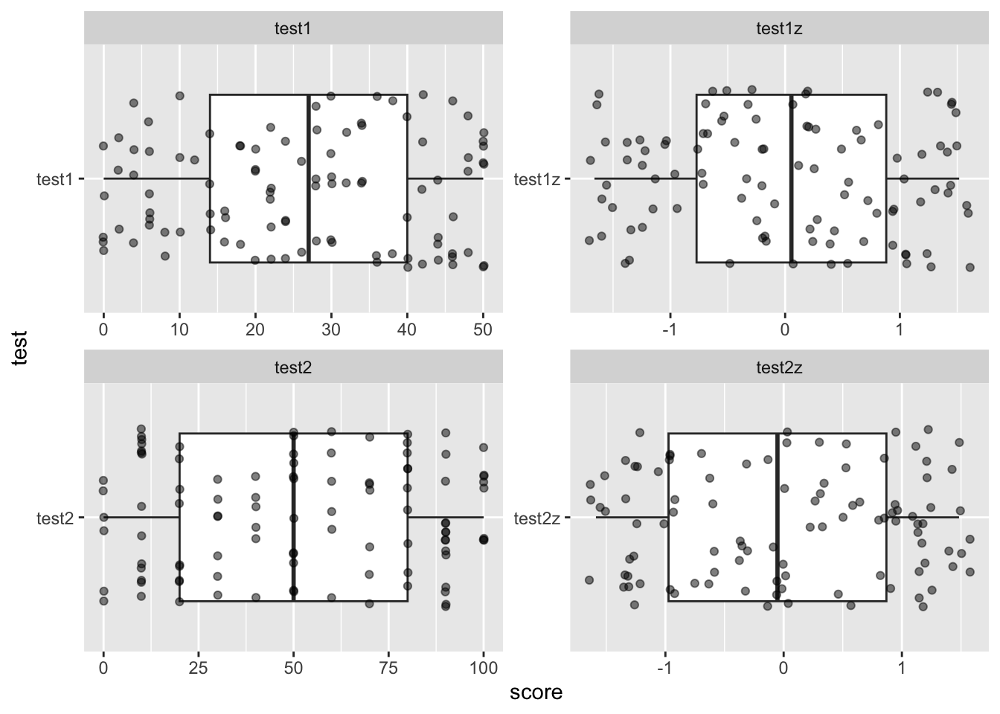

Consider a situation where you measure performance on two tests of lexical knowledge. One test is 25 items worth 2 points each with a total possible score of 0-50. The second test is 10 items, each worth up to 10 points, for a total possible score of 0-100.
Let’s first simulate this data for a hypothetical 100 participants. Create two objects, test1_possible_scores and test2_possible_scores. Using the seq function, set the correct possible range for each test.
test1_possible_scores range is 0 to 50, iterating by 2test2_possible_scores range is 0 to 100, iterating by 10test1_possible_scores <- seq(0,50,2)
test2_possible_scores <- seq(0,100,10)
test1_possible_scores## [1] 0 2 4 6 8 10 12 14 16 18 20 22 24 26 28 30 32 34 36 38 40 42 44 46 48
## [26] 50test2_possible_scores## [1] 0 10 20 30 40 50 60 70 80 90 100You should see something like this:
[1] 0 2 4 6 8 10 12 14 16 18 20 22 24 26 28 30 32 34 36 38 40 42 44 46 48 50
[1] 0 10 20 30 40 50 60 70 80 90 100Now use a set.seed with the value 092021 to generate 100 samples from each test. Name your variables test1sample and test2sample. Use the sample() function, with the argument replace = TRUE
set.seed(092021)
test1sample <- sample(test1_possible_scores, 100, replace = TRUE)
test2sample <- sample(test2_possible_scores, 100, replace = TRUE)
test1sample## [1] 46 42 8 50 22 20 8 14 42 16 4 24 50 20 50 22 2 48 24 18 10 20 28 40 36
## [26] 12 0 48 6 46 44 44 22 24 2 34 48 26 14 28 46 40 48 18 42 4 6 38 18 40
## [51] 34 44 32 30 4 6 0 34 22 22 38 50 28 20 28 30 34 22 50 6 30 32 30 6 14
## [76] 10 46 26 50 0 16 4 2 30 14 46 24 50 28 42 36 16 44 6 10 36 0 0 40 30test2sample## [1] 60 20 50 30 90 20 70 70 70 60 10 20 30 90 100 90 50 30
## [19] 60 80 10 90 10 50 80 80 40 80 100 80 80 50 10 100 20 50
## [37] 70 90 30 70 80 20 20 0 80 60 70 0 10 90 100 50 90 0
## [55] 90 90 40 50 60 90 50 40 40 30 0 10 80 90 10 90 10 20
## [73] 50 100 30 50 60 10 10 80 100 100 20 70 0 40 90 10 50 90
## [91] 10 50 10 40 0 10 100 20 90 30You should get data that looks like this:
test2sample
[1] 46 42 8 50 22 20 8 14 42 16 4 24 50 20 50 22 2 48 24 18 10 20 28 40 36 12 0 48 6 46 44 44 22 24 2 34 48 26 14
[40] 28 46 40 48 18 42 4 6 38 18 40 34 44 32 30 4 6 0 34 22 22 38 50 28 20 28 30 34 22 50 6 30 32 30 6 14 10 46 26
[79] 50 0 16 4 2 30 14 46 24 50 28 42 36 16 44 6 10 36 0 0 40 30
test2sample
[1] 60 20 50 30 90 20 70 70 70 60 10 20 30 90 100 90 50 30 60 80 10 90 10 50 80 80 40 80 100
[30] 80 80 50 10 100 20 50 70 90 30 70 80 20 20 0 80 60 70 0 10 90 100 50 90 0 90 90 40 50
[59] 60 90 50 40 40 30 0 10 80 90 10 90 10 20 50 100 30 50 60 10 10 80 100 100 20 70 0 40 90
[88] 10 50 90 10 50 10 40 0 10 100 20 90 30Now create a tibble named zed01 with three columns:
subject, which is the number range 1:100test1, which is the object test1sampletest2, which is the object test2samplezed01 <- tibble(subject = 1:100,
test1 = test1sample,
test2 = test2sample)
str(zed01)## tibble [100 × 3] (S3: tbl_df/tbl/data.frame)
## $ subject: int [1:100] 1 2 3 4 5 6 7 8 9 10 ...
## $ test1 : num [1:100] 46 42 8 50 22 20 8 14 42 16 ...
## $ test2 : num [1:100] 60 20 50 30 90 20 70 70 70 60 ...You should see something like this when running str(zed01)
tibble [100 × 3] (S3: tbl_df/tbl/data.frame)
$ subject: int [1:100] 1 2 3 4 5 6 7 8 9 10 ...
$ test1 : num [1:100] 46 42 8 50 22 20 8 14 42 16 ...
$ test2 : num [1:100] 60 20 50 30 90 20 70 70 70 60 ...What is the mean and sd of our two test scores? We don’t need to be fancy, you can just run mean() and sd() on the two columns.
Mean and SD for zed01$test1
mean(zed01$test1)## [1] 26.14sd(zed01$test1)## [1] 15.72556Mean and SD for zed02$test2
mean(zed01$test2)## [1] 51.7sd(zed01$test2)## [1] 32.56865We might want to visualize the data in order to see the range of test scores. Before we do that, let’s use pivot_longer to combine our test scores into a single column, with the resulting columns being named test and score. Create a new tibble named zed02 from zed01 to do this.
pivot_longer(cols = c(), names_to = '', values_to = '')
zed02 <- zed01 %>%
pivot_longer(cols = c(test1, test2), names_to = 'test', values_to = 'score')Create a ggplot from zed02, with test on the y-axis and score on the x-axis. Add a geom_boxplot geom to your plot. Then add a geom_jitter() with alpha = .5.
What do you see?
ggplot(zed02, aes(x= score, y = test)) +
geom_boxplot() +
geom_jitter(alpha = .5)The issue is that we can’t meaningfully compare these scores because they are on different scales. The solution to this is to use z-scores, which standardize any set of values to be on the same scale. To calculate a z score, use this formula
For each value:
(value - mean)/sd
Since we already know how to calculate mean and sd, we should be able to do this pretty easily. Let’s use zed01 to create z-score versions of our variables.
Create a new tibble named zed03 fromzed01. Using mutate, create two new columns which are the z-scores of test1 and test2. Name them test1z and test2z. Use the formula above (and not any pre-existing functions). You need to be very careful how you place your brackets so that order of operations is applied correctly.
# Put your code here
zed03 <- zed01 %>%
mutate(test1z = (test1 - mean(test1))/sd(test1),
test2z = (test2 - mean(test2))/sd(test2))If successful you should see this when running str(zed03)
tibble [100 × 5] (S3: tbl_df/tbl/data.frame)
$ subject: int [1:100] 1 2 3 4 5 6 7 8 9 10 ...
$ test1 : num [1:100] 46 42 8 50 22 20 8 14 42 16 ...
$ test2 : num [1:100] 60 20 50 30 90 20 70 70 70 60 ...
$ test1z : num [1:100] 1.263 1.009 -1.154 1.517 -0.263 ...
$ text2z : num [1:100] 0.2548 -0.9733 -0.0522 -0.6663 1.176 ...Make a new tibble named zed04 from zed03. Then use pivot_longer on your regular and z-scored variables to create new columns with the same names you used for zed02 (test and score).
zed04 <- zed03 %>%
pivot_longer(cols = c(test1, test2, test1z, test2z), names_to = 'test', values_to = 'score')
str(zed04)## tibble [400 × 3] (S3: tbl_df/tbl/data.frame)
## $ subject: int [1:400] 1 1 1 1 2 2 2 2 3 3 ...
## $ test : chr [1:400] "test1" "test2" "test1z" "test2z" ...
## $ score : num [1:400] 46 60 1.263 0.255 42 ...Make a new tibble named zed04z which includes subject and the z-scored values using filter(). We want to filter so that ONLY test1z and ONLY test2z remain in the data.
zed04z <- zed04 %>%
# filter(str_detect(test, 'z'))
filter(test == 'test1z' | test == 'test2z')
str(zed04z)## tibble [200 × 3] (S3: tbl_df/tbl/data.frame)
## $ subject: int [1:200] 1 1 2 2 3 3 4 4 5 5 ...
## $ test : chr [1:200] "test1z" "test2z" "test1z" "test2z" ...
## $ score : num [1:200] 1.263 0.255 1.009 -0.973 -1.154 ...Recreate the same ggplot as you did before. What do you see now?
ggplot(zed04z, aes(y = test, x = score )) +
geom_boxplot() +
geom_jitter(alpha = .5)When you z-score a variable, you set the mean = to 0, with each increase in one unit = 1 standard deviation. This is incredibly useful when modelling and visualizing data (and in fact basically a requirement for regression.)
To demonstrate this, let’s create a final plot which includes our raw and z-score variables side by side. Create a ggplot from zed04 which uses the same boxplot and jitter as the previous plot. However, before those commands, use a facet_wrap(. ~ test, scales = 'free')
ggplot(zed04, aes(y = test, x = score)) +
facet_wrap(. ~ test, scales = 'free') +
geom_boxplot() +
geom_jitter(alpha = .5, width = .1)
You should notice that we actually haven’t “changed” the data fundamentally, instead we have “transformed” it by applying the same transformation to all data points.
If you want to get fancy you can play with other packages, like ggridges to get different types of visualizations. Replace the boxplot and jitter with a geom_density_ridge() to get the following plot (you’ll need to install.packages(ggridges)) install.packages('ggridge')
library(ggridges)
ggplot(zed04z, aes(x = score, y = test)) +
geom_density_ridges(aes(fill = test), alpha = .5)## Picking joint bandwidth of 0.358And, by the way, you can just use scale() to z-score things automatically without having to use the formula. Here is an example below that will apply a mutate across all columns, and then use as.vector() to strip the attributes associated with the transformation.
zed05 <- zed01 %>%
mutate(across(.cols = c(test1, test2), scale, center = T, scale = T)) %>%
mutate(across(everything(), as.vector))